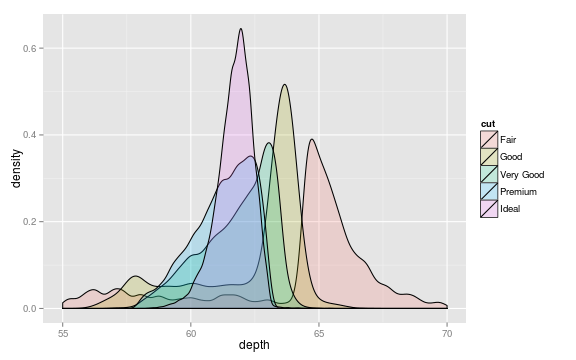

Welcome to R!
The awesome way to do data analysis.

What is R?
R is a freely-available, open-source, derivative of S-Plus that has attracted the attention of wide range of users in both the academic and private sectors. There are several key features which make R an awesome tool for data analysis.
R is both:
- A programming language
- A huge library of tools for analyzing and visualizing data
R is a full-featured programming language and statistical analysis environment which can be used to analyze and visualize complex datasets. It has proven to be an invaluable tool for research in both systems biology and computational biology, in addition to being used in a wide variety of other basic research disciplines and in industry. In this class you will learn to program in R.
The learning curve will be a little steep at first, but ultimately should prove extremely rewarding! Learning any programming language, R included, is a great way to develop your formal reasoning skills. As scientists, learning to program – and going through the process of articulating our data analysis designs in formal code – can help us to better understand our experiments. More importantly, writing software to analyze our data can help us to identify places where we haven't really thought through our experiment very well. Hopefully, learning to program in R will also prove useful to you in other work in your undergraduate career or may even help you land a job after you graduate. Additionally, after you learn your first programming language it is much easier to learn other languages in the future!
Like many other high-level programming languages, when you install R it comes with a large library of tools. Unlike other languages, this toolbox is geared towards statistical analysis and data visualization. The volume of statistical tools is truly staggering and the biggest barrier to entry into R for new comers is probably this embarrassment of riches! In this regard, R blows everything else – Excel, Minitab, SPSS, etc – out of the water. Which leads us to…
Why is R awesome?
Because R is both:
- Open source (free like ideas)

- Free to use (free like pizza)

R is entirely open source. This means that the software is both free to obtain (free as in pizza) and that the implementation details of all statistical methods found in it R are freely available and open to scrutiny (free as in ideas).
We’ll see this feature in action in a few minutes, but consider for a moment how important this is! We, as scientists, are deeply invested in making sure that our research – both methods and results – are transparent and open to community scrutiny. And yet the moment we use commercial software like Excel, SPSS or Matlab to analyze our data we are stuck having to trust that the developers of those software packages haven’t made any mistakes and that the software actually works in the way they claim. This is definitely not always going to be the case! When you are working in R, by contrast, you are using code that has been read and assessed by a large community of statisticians and researchers. More importantly, once you learn how to read R code (which you’re about to!), you can use the source code yourself to understand how different statistical procedures work, which is awesome!
So, what is R, exactly?
An interpreter
Interpreters are software that run code.
In this case, the R software runs code written in R:
message("Hello Bio285!")
Hello Bio285!
What's happening here? The top line is code that we've written. The second line is the output from our program. Hopefully, even without looking at the second line, you'd have been able to guess what this program does! The R interpreter took our one litte line of code, translated it into actual hardware instructions for a device (in this case my computer), made the hardware do a computation with those instructions, and then returned the result to us. Isn't programming cool?
An interactive environment
- Prompt: an interactive conversation with R
- History: remembers what you've “said”
- Workspace: remembers what you've made
Beat that Excel.
A huge library of functions
There is an extensive library of software written for you to use with R.
It is:
- Mostly written in R itself
- Read, analyze and visualize data
- Documented with examples!
The major disadvantage to R is that it has a significantly steeper learning curve than spreadsheets or commercial stats packages. Unlike these other types of software, R doesn't offer much in the way of a graphical interface: you type commands at a prompt to make it do your bidding. If you haven't ever worked in a command line environment it can definitely take some getting used to! There is one huge advantage to this setup, however: once you figure out how to do an analysis once, you can save your commands to a text file (“.R” script) and re-run them on any new data you generate. This allows you to avoid repetitive tasks and ensures that each time you analyze your data you are performing the analysis in the same way. Let's dive in and see R in action!
A huge library of functions
How will we be using R?
Welcome to RStudio…

Time to dive in…
After class excercise
Your task:
- Read the DNA sequence in the file dna.txt located in your home folder
- Transcribe it into RNA sequence
- Save the results to a new file, rna.txt
Parts list:
- readLines() hint con = “dna.txt”
- sub() hint fixed = true
- write()
Help on using the parts:
- help() or ? for info on the parts
Extra special challenge:
Try translating the DNA sequence to protein (using the genetic code)!